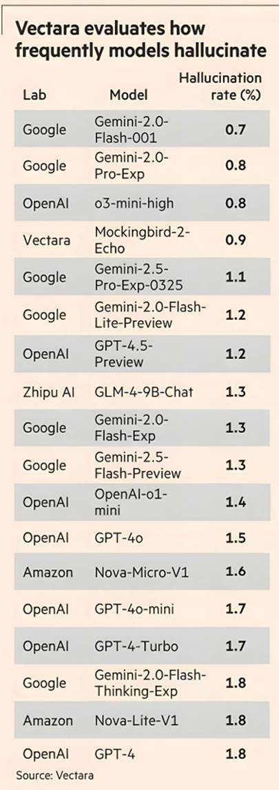

MELISSA HEIKKILÄ — LONDON

The leading artificial intelligence groups are stepping up efforts to reduce the number of “hallucinations” in large language models, as they seek to solve one of the big obstacles limiting take-up of the powerful technology.
Google, Amazon, Cohere and Mistral are among those trying to bring down the rate of these fabricated answers by rolling out technical fixes, improving the quality of the data in AI models, and building verification and fact-checking systems across their generative AI products.
The move to reduce these so-called hallucinations is seen as crucial to increase the use of AI tools across industries such as law and health, which require accurate information, and help boost the AI sector’s revenues.
It comes as chatbot errors have already resulted in costly mistakes and litigation. Last year, a tribunal ordered Air Canada to honour a discount that its customer service chatbot had made up, and lawyers who have used AI tools in court documents have faced sanctions after it made up citations.
But AI experts warn that eliminating hallucinations completely from large language models is impossible because of how the systems operate.
“Hallucinations are a very hard problem to fix because of the probabilistic nature of how these models work,” said Amr Awadallah, a former Google executive and founder of Vectara, a generative AI agent start-up. “You will never get them to not hallucinate.”
These errors occur because large language models are designed to predict the next likely word in a sentence based on statistics they have learnt from their training data.
These mistakes can look like either factual inaccuracies or the model not aligning with instructions by, for example, summarising events from the wrong year. What data goes into an AI model’s training set is important, because the more often a piece of information appears, the more likely it is that the model will repeat it.
The amount that AI models hallucinate varies significantly. Vectara, which has created a leaderboard tracking these errors, found that some can hallucinate as little as 0.8 per cent of the time while others as much as 29.9 per cent when asked to summarise a document.
The rate of hallucinations initially went up with a new generation of AI models that are able to “reason”, or solve problems step by step. This is probably because they are iterating inside of themselves for longer in order to solve problems in different ways, which leads to a higher probability of mistakes, said Awadallah. However, the rate of hallucinations has gone down, as companies have learnt how to build better safeguards for the models, he added.
But its research showed that when AI systems are “grounded” in other sources of information, such as online search, news articles or internal company documents — rather than just relying on training data — the number of errors is reduced significantly.
AI groups have been focusing on this “grounded” approach to work out the best methods to help reduce hallucinations as much as possible.
A common technique used by labs is called retrieval-augmented generation (RAG), which searches for information from outside sources, which can be used to fact check claims made by AI systems.
Chatbots from companies such as Cohere, Mistral, Google DeepMind, OpenAI and Anthropic offer citations, which show users the sources they based their generated texts on.
In January, French AI start-up Mistral struck a multimillion-euro deal with Agence France-Presse to incorporate thousands of the newswire’s articles into its chatbot to boost its fact checking. Both Mistral and Canadian AI group Cohere also allow their models to be plugged into the internal data sources of their customers, which allows them to refer to internal documents for fact checking. That way, the model is grounded in the context and information that customers want it to process.
“If you want the model to not hallucinate and to be very precise . . . the best way is to plug it to the internal databases,” said Alexandre Sablayrolles, who leads work on agents and RAG at Mistral.
Byron Cook, vice-president and scientist at Amazon Web Services, believes that applying mathematical logic and reasoning can also help minimise hallucinations. This led the group to introduce a new safeguard in December, called automated reasoning checks, that works as an additional test by its models to validate the accuracy of its responses.
Some companies, such as Google DeepMind, Cohere, Mistral and Vectara, also use smaller “evaluator” language models specifically trained to check the outputs of another language model for errors.
Most models have the option for developers to toggle the so-called temperature or how randomly the model should generate the next likely word. But even the most rigorous technical fixes will not ensure complete truthfulness, said Nick Frosst, co-founder of Cohere. “It’s not like we can train a model to only say true things because what is true is dependent on what is going on in the world,” said Frosst. “And that’s changing and it’s dependent on your own point of view in some situations.”
Allowing AI models to search the internet for information also makes them susceptible to an attack called prompt injection, said Vectara’s Awadallah. This is where a third party can insert false information into places where large language models check their information, such as Reddit and Wikipedia or other websites. This information can then make the AI model present false information as facts, or disregard its guard rails and “misbehave”.
When Google launched its new AI search tool last year, it told users to put glue on pizza and eat rocks after someone had jokingly posted that on Reddit.
Part of the challenge for AI developers is reaching a balance between verifying information for accuracy and enabling the model to be “creative”. “Building creativity into models makes them more useful but then it can also lead to more creative, rather than factual, answers,” said Google DeepMind.
AWS’s Cook noted that hallucinations could also sometimes be “desired” by users. “If you're trying to write poetry with them, then that’s actually pretty good. You are looking for weird answers that find weird connections between things,” said Cook.
Cohere’s Frosst warned that even the term hallucination was misleading. “It sounds too much like [the model] working the way a human brain works, and it does not,” he said. “It works in a completely different way.”